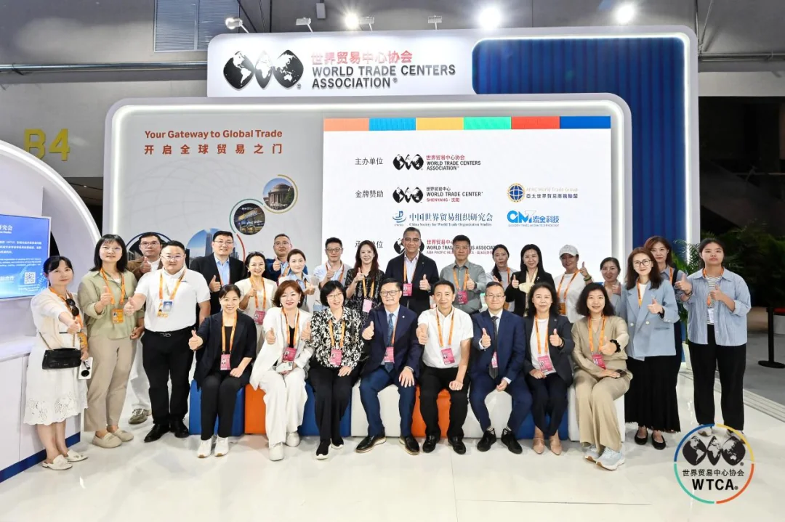
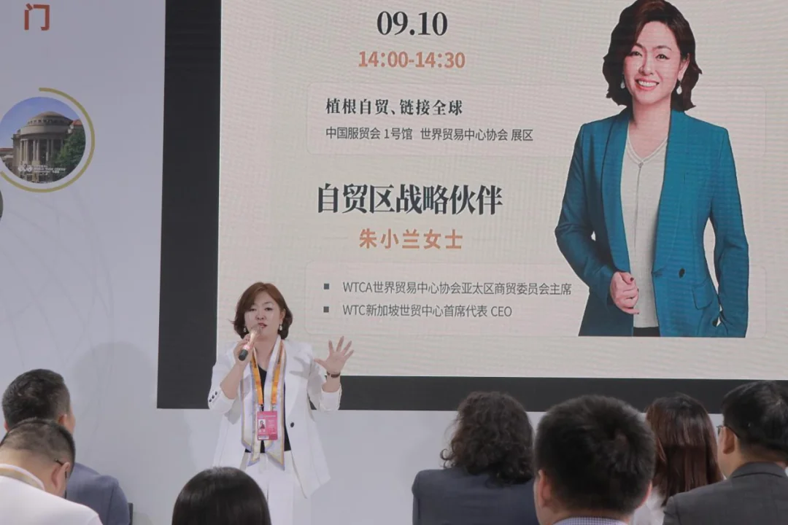
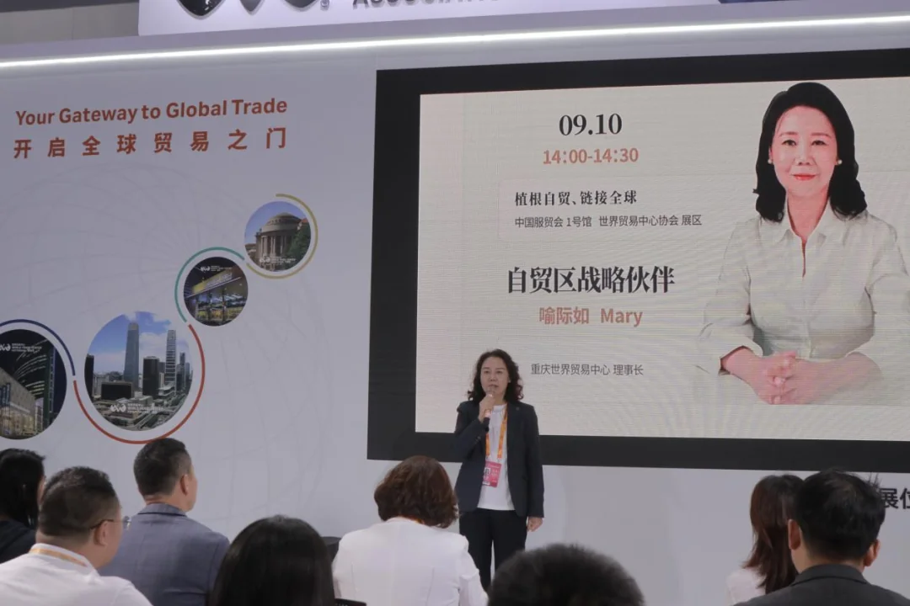
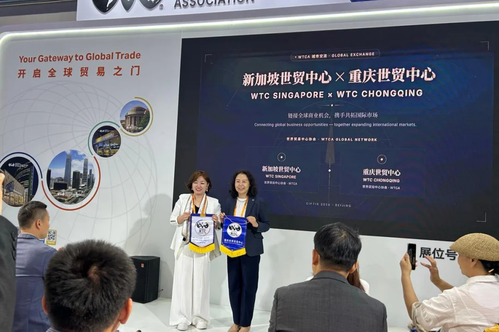
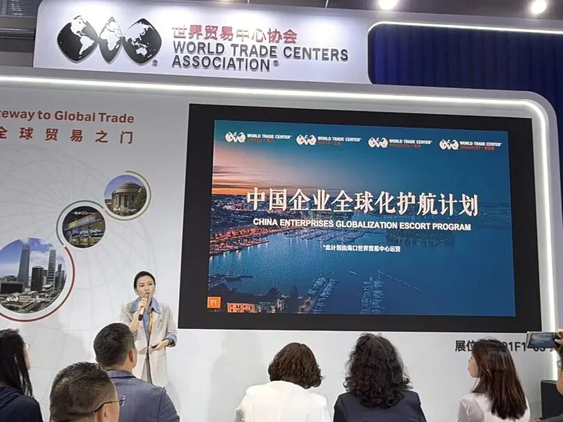
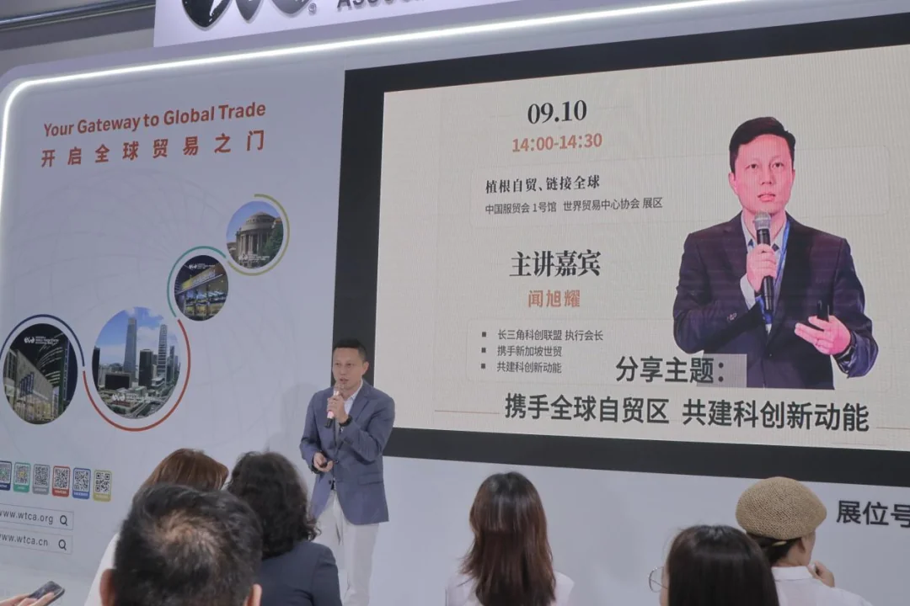
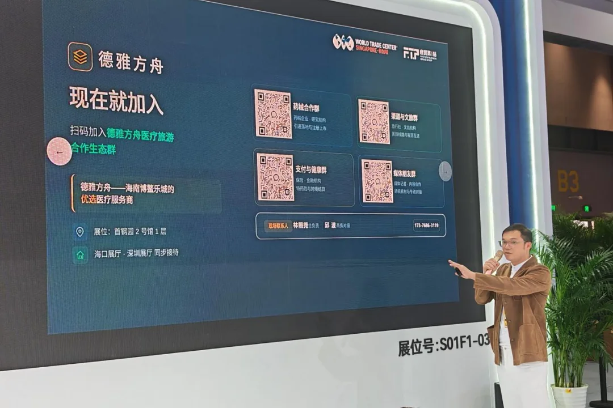
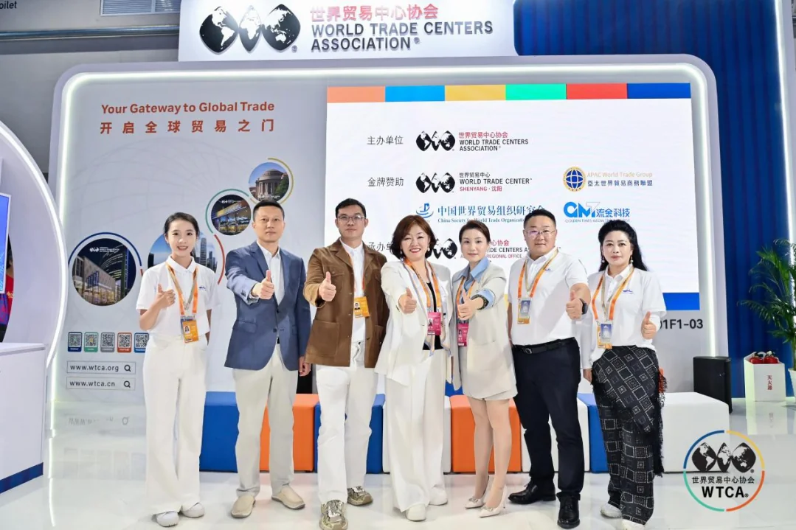
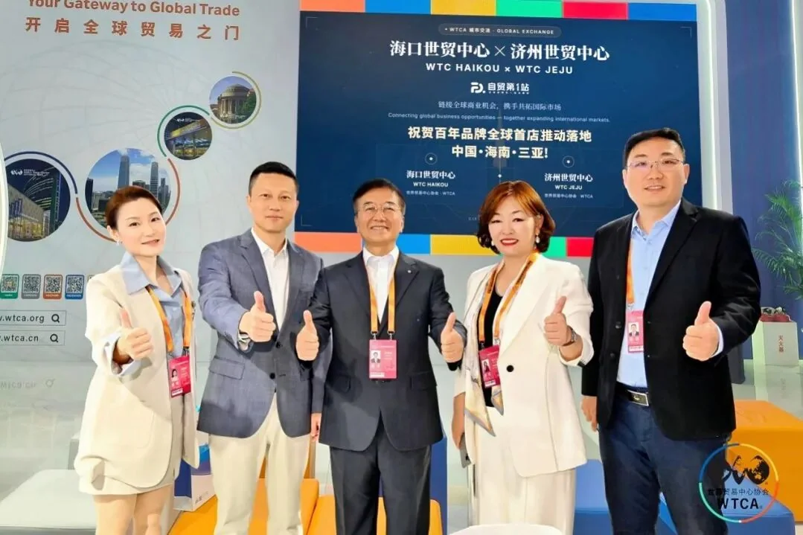
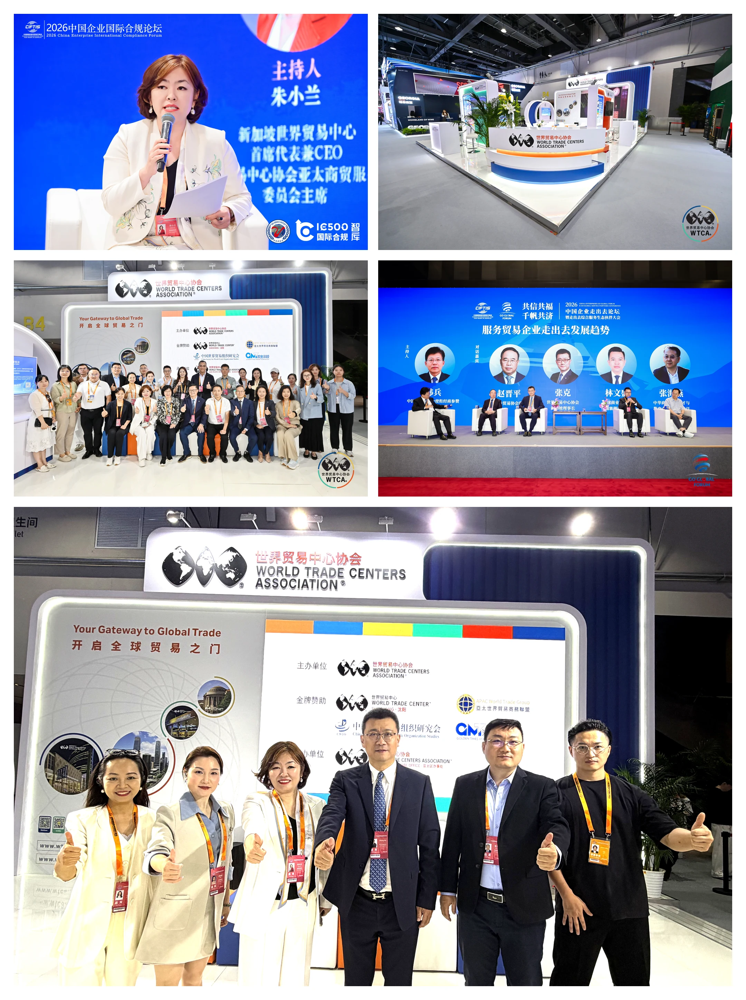

Beijing, 10 September 2026 — As Secretary-General of WTCA Singapore, what struck me most that day was not any single speaker, but that global free trade zone service partners were appearing together, as a system, for the first time. That afternoon, a branded event themed "Rooted in Free Trade, Connected to the World" was held at the WTCA (World Trade Centers Association) main exhibition area during the 2026 China International Fair for Trade in Services (CIFTIS). Members of the global business network, representatives of free trade zone service providers and industry figures gathered to witness the collective debut of global free trade zone ecosystem partners and the official release of two major international cooperation outcomes. The event was led by the Asia-Pacific Business Committee of the WTCA, jointly organized with WTC Singapore and WTC Chongqing, and co-hosted with quality service institutions from Hainan and Shanghai free trade zones. It aimed to build an international platform for cross-regional economic and trade cooperation and resource matching.

Zhu Xiaolan, Chief Representative and CEO of WTC Singapore: Empowering FTZ Connectivity Through the Global Network
Ms. Zhu Xiaolan, Chair of the Asia-Pacific Business Committee of the WTCA and Chief Representative and CEO of WTC Singapore, opened the event with remarks. She said the WTCA network covers more than 95 countries and regions and over 320 cities, connecting more than 750,000 affiliated enterprises, making it one of the most influential business service platforms in the world.
Zhu noted that amid profound adjustments in the global economic and trade landscape, free trade zones, as important windows for opening up, are becoming key nodes linking capital, innovation and global markets. WTC Singapore will leverage its hub position in the ASEAN market to deepen cooperation with partners in China's free trade zones, offering companies going global one-stop services in market entry, compliance and localized operations, and opening up two-way channels between ASEAN and China. She also introduced WTC Singapore's three core business segments — the WTC ONE Club international business club, the GlobalX go-global accelerator and the WTC Fund innovation capital ecosystem — which are dedicated to building an innovative investment ecosystem of "capital + industry + scenarios" and accelerating companies' global expansion.

Yu Jiru, Chairman of WTC Chongqing: Building an International Economic and Trade Hub for the Western Land-Sea New Corridor
Ms. Yu Jiru, Chairman of WTC Chongqing, then delivered a speech. She said Chongqing, as an important hub city of the Western Land-Sea New Corridor, has a unique geographical advantage in connecting western China with the ASEAN market. WTC Chongqing will give full play to its platform functions and promote deeper connections between enterprises in western China and the global business network.
Yu stressed that WTC Chongqing will work closely with WTC Singapore in all-round cooperation in trade promotion, enterprise services and exhibition exchanges, jointly creating more cross-border business opportunities for companies in both locations.

Singapore and Chongqing Join Forces: WTC Singapore and WTC Chongqing Hold Joint Flag Presentation Ceremony
After the speeches, a joint flag presentation ceremony was held between WTC Chongqing and WTC Singapore. Ms. Zhu Xiaolan and Ms. Yu Jiru took the stage together to exchange and present each other's institutional flags, marking the formal establishment of a strategic partnership between the two world trade centers. The partnership will give full play to the complementary strengths of Singapore as an ASEAN financial and trade hub and Chongqing as a core node of the Western Land-Sea New Corridor, building a more efficient cross-border service bridge for companies in both locations and driving regional economic and trade cooperation to a higher level.

Xi Rui, Media Brand Representative of Hainan FTZ, FTP Free Trade Zone No. 1 Station: Building a New Ecosystem for FTZ Enterprise Services
Ms. Xi Rui, a media brand representative of the Hainan Free Trade Zone and co-founder of FTP Free Trade Zone No. 1 Station, introduced the development philosophy and service model of FTP Free Trade Zone No. 1 Station. She said that as a media brand rooted in the Hainan Free Trade Port, FTP Free Trade Zone No. 1 Station is committed to building a professional information service and brand communication platform in the free trade zone sector, providing companies with diversified services such as policy interpretation, industry news and brand promotion.
Xi noted that the construction of the Hainan Free Trade Port is at a critical stage and needs more professional and international service institutions to participate. FTP Free Trade Zone No. 1 Station will deepen cooperation with the WTCA global network, helping Hainan Free Trade Port companies connect with global resources while helping international companies better understand and enter the Hainan market.

Wen Xuyao, Executive President of the Yangtze River Delta STI Alliance: Using the Shanghai FTZ as a Hub to Drive Global Allocation of Innovation Resources
Mr. Wen Xuyao, a representative of Shanghai Free Trade Zone organizations and Executive President of the Yangtze River Delta Science and Technology Innovation (STI) Alliance, spoke on technological innovation and regional coordination. He said the Yangtze River Delta is one of China's most dynamic and open regions, and the Shanghai Free Trade Zone, as a testing ground for institutional innovation, plays an important role in promoting the cross-border flow of innovation resources. Wen introduced that the Yangtze River Delta STI Alliance is committed to integrating resources from universities, research institutes, enterprises and investment institutions in the region, building a full-chain innovation service system covering technology transfer, commercialization of research results and industrial incubation.
The alliance looks forward to strengthening cooperation with the WTCA global network and free trade zone partners, promoting Yangtze River Delta innovation achievements globally while attracting international innovation resources to China.

Qiu Bo, Co-founder of Deya Ark: Making Boao Lecheng a New Benchmark for International Health Tourism Services
Mr. Qiu Bo, a representative of Hainan Free Trade Zone health service brand companies and co-founder of Deya Ark, a quality service provider in Boao Lecheng, shared Deya Ark's development experience in the Boao Lecheng International Medical Tourism Pilot Zone in Hainan. He said Boao Lecheng, as China's only "medical special zone," enjoys special policy advantages in the admission of internationally advanced medical technologies, drugs and devices, and is becoming an important destination for international health tourism.
Qiu introduced that Deya Ark focuses on providing high-end clients with one-stop services such as international medical consulting, health management and wellness vacations, and is committed to combining Boao Lecheng's quality medical resources with international service standards to build a globally competitive health service brand.

Outcome Release 01: "Global Free Trade Zone Health Industry Linkage Mechanism" Officially Launched
The event then reached its first major outcome release. Witnessed by all guests, the "Global Free Trade Zone Health Industry Linkage Mechanism" was officially launched. The mechanism was initiated by the WTCA, together with Boao Lecheng in Hainan, the Shanghai Free Trade Zone and health service institutions in multiple free trade zones around the world. It aims to build a cross-border, cross-regional health industry cooperation platform and promote medical technology exchange, mutual recommendation of health tourism, industrial resource sharing and mutual recognition of standards. The launch marks a new stage of institutionalized and regularized cooperation in the global free trade zone health industry. It will create more cross-border cooperation opportunities for health service companies in various countries and offer global consumers more diverse and higher-quality health service options.

Outcome Release 02: WTCA "Century-Old Brand Global First Store" to Land in Sanya, Hainan, China
The second global cooperation outcome was then unveiled — the WTCA "Century-Old Brand Global First Store" will land in Sanya, Hainan, China. According to the introduction, the project was initiated under the overall coordination of Li Mingxing, Global Director of the WTCA, Executive Director of CWTO and President of the Asia-Pacific World Trade Business Alliance. It invites Hainan Tourism Duty Free, WTC Haikou and WTC Jeju to jointly advance the project, with FTP Free Trade Zone No. 1 Station providing full-process services. By selecting international century-old brands, it will create a composite commercial project in Sanya, Hainan, integrating brand display, experiential consumption and cultural exchange. The project will make full use of the Hainan Free Trade Port's offshore duty-free policy advantages and its positioning as an international tourism consumption center, providing a new display and trading platform for international century-old brands entering the Chinese market while enriching Hainan's international tourism consumption offerings. President Li Mingxing said the Sanya first store is an important starting point for the global brand program. In the future, it will gradually expand to more free trade zones and major commercial cities around the world, creating a globally influential cluster of century-old brands.
As Secretary-General of WTCA Singapore, I was also on stage for the outcome release (above). What caught my attention was not simply one more cross-border project, but that the WTCA global network is moving from "connecting cities" to "connecting industries" — only when free trade zone service partners truly string together brands, healthcare, capital and channels can the "last mile" of Chinese companies going global begin to be solved.

Conclusion: Free Trade as the Root, the World as the Stage
The successful holding of this "Rooted in Free Trade, Connected to the World" branded event not only showcased the overall strength and cooperation vision of global free trade zone service partners, but also injected new momentum into cross-regional economic and trade cooperation through the release of two substantive outcomes. From Singapore to Chongqing, from Hainan to Shanghai, from health industry linkage to the landing of century-old brands, bonds of cooperation are being woven among free trade zones around the world. At a time when the world economy faces many uncertainties, promoting cooperation through openness and pursuing development through connectivity is becoming a common choice of the global business community. With the support of the WTCA member system, we will continue to leverage our global network advantages and work hand in hand with free trade zone partners to promote trade and investment liberalization and facilitation, contributing to global economic recovery and sustainable development.
"Free trade as the root, the world as the stage. When free trade zone service partners move from 'fighting alone' to 'appearing as a system,' Chinese companies going global are no longer on their own — and that is exactly where the WTCA global network will keep multiplying its value."
— Bruce Dong, Secretary-General & COO, WTCA Singapore
About the World Trade Centers Association
The World Trade Centers Association (WTCA), founded in 1970, is a non-profit, non-political organization dedicated to establishing and operating World Trade Centers worldwide to promote regional economic development and international trade and investment. Headquartered in New York, its global network spans nearly 100 countries and territories with over 300 World Trade Centers, serving thousands of member companies and clients by helping them source, find customers and improve financing and investment access.
About World Trade Center Singapore (WTC Singapore)
World Trade Center Singapore is the WTCA's officially authorized member in Singapore. Through three business pillars — WTC ONE Club, GlobalX and WTC Fund — it connects global capital, innovation resources and market opportunities, providing enterprises with cross-border matchmaking and globalization support.